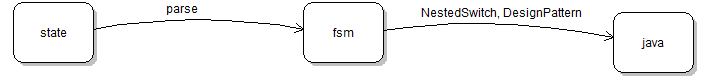
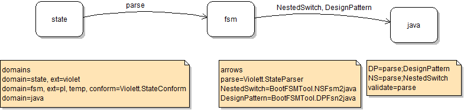
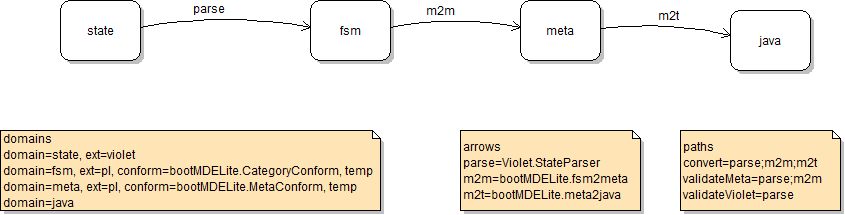

Bootstrapping MDELite
MDELite is based on categories (as in category theory) for bootstrapping. MDELite has a tool, MDL.Catalina, that allows one to define a category of domains and arrows, and traversals of this category (to define MDE computations), and it will assemble a single Java file tool that implements this specification. Catalina currently offers one way to specify a category. We describe it next and briefly explain a second way.
Violet "Category" Diagrams
Violet is a simple UML class-diagram and state-diagram drawing tool. We use Violet's state-diagram capabilites to draw simple categories as MDELite applications. A Violet "Category" diagram is a set of bubbles called domains and a set of arrows, where each arrow leaves one domain and ends at another. Here is a simple category that converts a Violet state-diagram into Java code.

The idea is to use Violet to draw a state diagram X, with a starting state and, optionally, an ending state. Violet produces a file X.state.violet. This file is then parsed (translated) into an instance of an fsm MDELite database in file X.fsm.pl. This database can then be translated into Java source in one of two ways -- either as a Java program with nested switch statements or as a Java program like the Gang-of-Four Design Patterns text. These different translations are two RunningBear programs NestedSwitch and DesignPattern. If one were to do these translations by hand they would be either of the two "program scripts" below. Note that as soon as a FSM database is created, a set of conformance tests are applied. Only if all program invocations in a script are successful is the translation of a Violet state diagram to Java code successful.
| toNestedSwitch | toDesignPattern |
> java Violett.State.Parser X.state.violet
> java Violett.State.Conform X.fsm.pl
> java FSM.NestedSwitch X.fsm.pl | > java Violett.State.Parser X.state.violet
> java Violett.State.Conform X.fsm.pl
> java FSM.DesignPattern X.fsm.pl |
When you look at the above diagram, it contains a lot, but not all information needed to produce these program scripts. So a more elaborate specification is needed -- it too is part of a Violet "Category" diagram, but this time notes are added to provide this extra information. Here is the contents of fsmtool.violet.state (which really is a "category diagram"):

We need additional information for each domain, arrow, and path expressed in the following Violet notes.
Domains Note
A domains note specifies extra information for each domain. We use the syntax [a] means 'a' is optional and (a)+ means one or more:
domains
(domain=<domain_name>[,] [ext=<extension_name>,] [temp,] [conform=<conformance_program>])+
- domain_name = the name of the domain,
- extension_name = the extension of a domain,
- temp = whether an instance of this domain is "temporary", meaning that it can be deleted upon program script exit,and absense of temp means not-temporary, and
- conformance_program = if the domain is a MDELite database (implying that its extension is "pl"), the name of a Java program that implements the database constraints must be specified.
Let's look at the example "domains note" above. Two domains of this category are defined:
- state, whose files have an extension ".violet" (as there is no temp declaration, its files are NOT deleted upon program script exit, and since its files are not MDELite database files (with extension ".pl"), there are no constraints to check or enforce. The files of state have the name X.state.violet, where X is the name of a diagram.
- fsm, whose files have an extension "pl", are temporary, and have Violett.StateConform as its constraint-checking file.
- java, whose files have an extension ".java"
Note: Domains like java that have no elaborations (no specified extensions, no conformance program, not temporary) need not have an entry in the domains note.
Arrows Note
Each arrow of a category has a name N, a starting domain S, an ending domain E and defines a total function N:S→E. Function N is implemented by a Java program that takes a file of domain S as input and produces a file of domain E as output. The syntax for a domains note is:
arrows
(<arrow_name>=<arrow_program>)+
Three arrows are defined the above diagram/spec:
- parse: state→fsm is implemented by Java program Violett.StateParser,
- NestedSwitch: fsm→java is implemented by Java program BootFSMTool.fsm2nestedstate, and
- designPattern: fsm→java is implemented by the Java program BootFSMTool.fsm2dp.
Paths Note
A path is a sequence of arrows separated by semicolons; it represents a computation (or path) through a category. The syntax for a path note is:
path
(<path_name>=<arrow_sequence>)+
Each arrow is executed, from left-to-right, in a path. A table is maintained with a row for each domain. The entry of a domain is the most recent file that was created in that domain or if that file was given as a command line argument to the MDELite application. There are 3 paths in the above specification
- DP (for "design pattern") = parse followed by DesignPattern
- NS (for "nested switch") = parse followed by NestedSwitch
- validate = parse, meant to check the ability for a state diagram to be parsed and conformance checked.
Generating an MDELite Tool with Catalina
The fsmtool.state.violet specification is translated into a tool called "fsmtool" (the name of the .state.violet spec), by the MDELite Catalina application:
> java MDL.Catalina X.state.violet
Bootstrapping Catalina
Here is the category diagram specification of a Catalina (or MDELite) application:

A Catalina spec is a .state.violet file. Arrow parse translates this file into a .fsm.pl database file. Arrow m2m translates a .fsm.pl file into a .meta.pl database file. And finally, the arrow m2t translates a .meta.pl database into the code of a single Java file.
Bootstrapping occurs in the following way: the above file is Catalina.state.violet. The Catalina tool transforms Catalina.state.violet into the Catalina.java file,
> java MDL.Catalina Catalina.state.violet
Note: it is possible to use a customized UML diagram to specify the same information as the above Violet category spec. This would add a "class" domain and another arrow cparse: class→fsm to the aboe diagram.